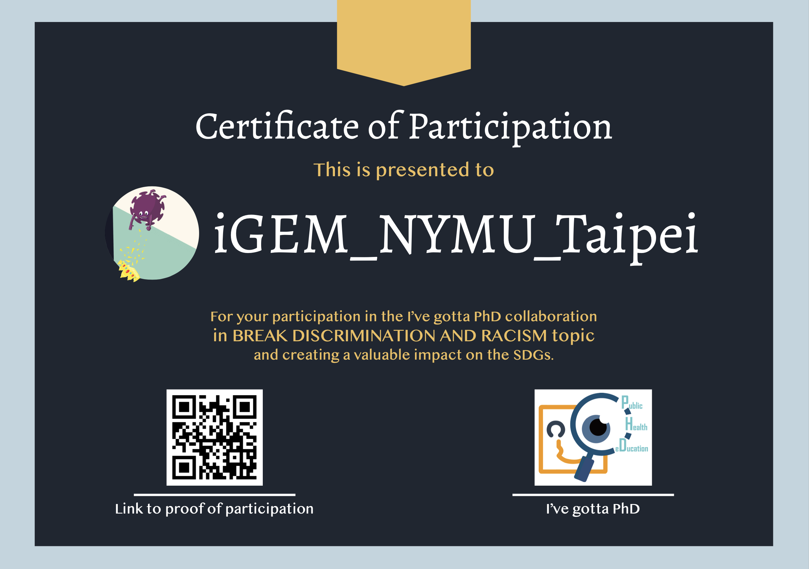

Partnership


The main purpose of company visits is to understand how a complete product should look like and make sure there is a need in the market for the product. In the communication and interactions with the companies, we learned about how their products were made which also gave us inspiration in our own product designs. On the other hand, the companies were also able to gain a different type of inspiration from us, for example: feedback on issues related with company responsibility to the public, strong passion for research… etc. The following content is about the two companies we had the honor to visit.
One of the brilliant examples to greatly embodies this concept is to let individuals having their own personal experience, which may make deeper impression on themselves. We put emphasis on the problem by encouraging them to make their own art crafts, which participants can display their creativity by giving imagination with contact lens as the material, delivering another value of contact lens waste. Works on that day were totally amazing, which we hadn’t seen before, as the contact lens on such master pieces glittering under the sun shine.


We also launched a public education program in NCKU together. Students from NCKU were invited to join this exciting and interesting events. We aimed to raise their awareness toward recycling contact lens issues and hope they can gain access to knowledge regarding dealing with contact lens waste after the sessions. Sharing project ideas of both teams is also our top priority. All in all, it was a successful and meaningful collaboration.


I’ve gotta PHD is a collaboration project with over 10 iGEM teams, hosted mainly by iGEM CSMU and iGEM NCKU teams, focusing on 7 topics, including Science Communication, Basic Health Care, Mental Health, Break Discrimination and Racism, Research, Health care Orginization, Policies. Owing to our dedications on COVID-19 issue, it cannot denied that the significant impacts of COVID-19 over the world. Besides focusing on lab efforts, our team also put emphasis on humanities issues. We found that the Chinese over the world, especially in western area, have been discriminated critically. This terrible situation even worsed during COVID-19 period. Conquently, we would like to present the phenomenon through this platform to public concerning the topic of Break Discrimination and Racism.
Through the ages, racial discrimination is consistently a significant issue. Even nowadays, more or less, violent debates between colors still exist as before in modern era. Until now, there is still no appropriate solution to this issue, no matter how fancy the world is. To make matters worse, due to the eruption of COVID-19, the problem has become more and more serious recently especially for Chinese people, which then results in social contradictions under the pandemic. Currently, COVID-19 have already taken over million lives globally. In the beginning, the virus was found in Wuhan, China. It, however, has become a worldwide disaster in a short term. The president of the United States, Donald Trump even called SARS-CoV-2 a ‘Chinese virus’. In the meantime, particularly in Western areas, the Chinese become obvious targets. In other words, the status of being Chinese put them at a risk of discrimination, which then contributes to incredible impact on their lives. According to Huma Right Watch (HWR), report on 17.04.2020 revealed that in just a few months, over 1000 cases of discrimination against the Chinese had been recorded. The Federal Bureau of Investigation (FBI) also delivered a warning that, during the pandemic, crime rates concerning assault on Chinese people may elevate rapidly. Those who assaulted Chinese people claim that individuals with yellow skin are virus transmitters and that since Chinese could carry the virus, they should all leave the western country. Some even go as far as to say that the Chinese should not have the same rights to live a normal life. Under these situations, an unspoken rule that is followed in those precarious areas is: ‘Individuals, who look like Chinese, should be attacked.’ The discrimination not only manifests in physical aggression but also verbal form, which is also the more common way. Examples include swearing and demands to leave shops. Among the discriminated, women are even more often the subjects of this kind of treatment. Given these situations, Chinese are often unwelcomed in many places. Just because of their ethnic backgrounds, hotels and even Uber drivers would reject services to the Chinese. A radio program in Holland even aired the track: ‘Voorkomen is beter dan Chinezen’, appealing the public masses to keep distance to the Chinese. In addition, face masks itself is already a hot topic, but to make matters worse, this topic is also commonly used in discrimination among Chinese people. Chinese People with masks will be assumed as infected while the ones without mask will be assumed as being careless virus transmitters. Being stigmatized as virus transmitters, the Chinese, due to fear of being attacked even further, advocate for change. They have established a team called ‘Asian Gambling SOS’ which aims to make connections between communities closer and stronger. Moreover, Jason Chu, an American-Born Chinese, wrote a rap song declaring that the Chinese living in western areas are not terrorist. They are just people who live there and that those places may be their ‘only’ home. It is just so ignorant and ridiculous to discriminate directly against all Chinese people. In conclusion, although having Asia faces, the Chinese are still human beings.